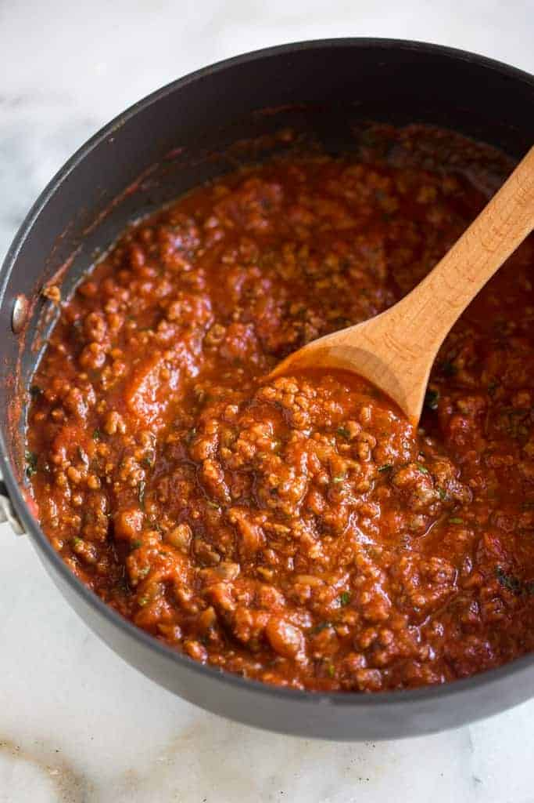

Home
Tomato Meat Sauce

This is a simple, easy to make tomato based meat sauce.
The secret to this sauce is using delicious, fresh ingredients, and
letting time do the work for you.
Ingredients
- 1 lb ground beef
- 2 tbsp olive oil
- 1 half onion, diced
- 2 cloves garlic, minced
- 1 can of RAO'S tomato saucce
- 1 half of a small carrot
Instructions
- Heat the olive oil in a large skillet over medium heat.
- Add the diced onion and minced garlic, and sauté until softened.
- Add the ground beef and cook until browned.
- Stir in the RAO'S tomato sauce and grated carrot.
- Simmer for 30 minutes, stirring occasionally.